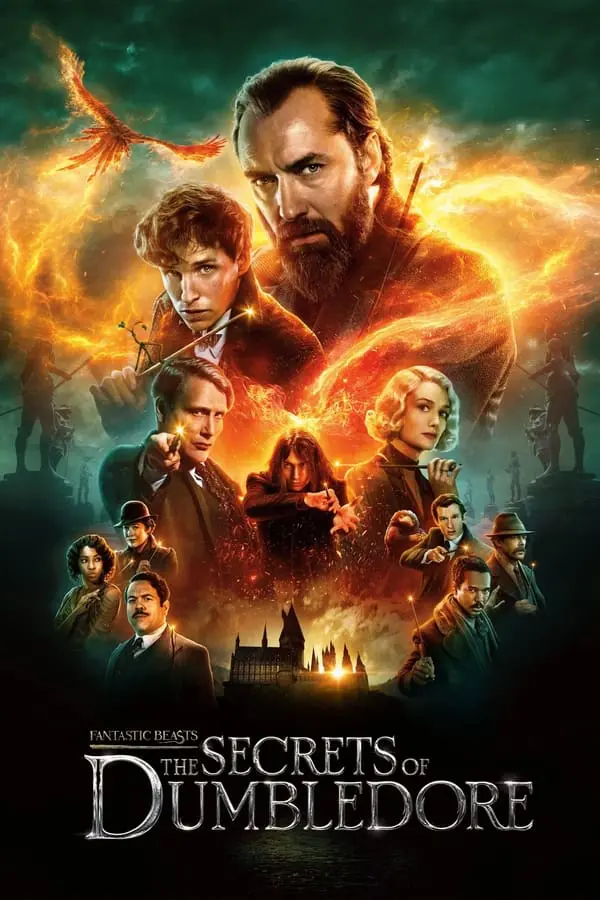

Fantastic Beasts, The Secrets of Dumbledore

Release Date : 14 Apr 2022
Language : English (Sub : Chinese)
Run Time : 143 Mins
Professor Albus Dumbledore knows the powerful Dark wizard Gellert Grindelwald is moving to seize control of the wizarding world.
Unable to stop him alone, he entrusts Magizoologist Newt Scamander to lead an intrepid team of wizards, witches and one brave Muggle baker on a dangerous mission, where they encounter old and new beasts and clash with Grindelwald's growing legion of followers.
But with the stakes so high, how long can Dumbledore remain on the sidelines?